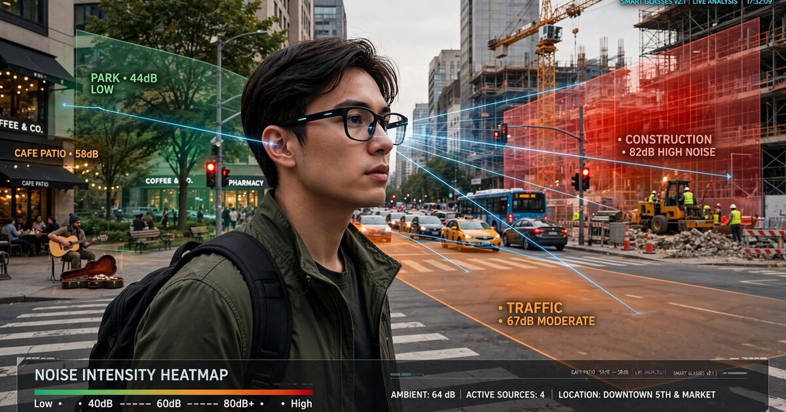

System and Method for Crowdsourced Urban Noise Pollution Mapping and Real-Time Source Attribution Using Consumer Smart Glasses Microphone Arrays with Privacy-Preserving Edge Inference

Abstract
Disclosed is a system and method for continuous, crowdsourced urban noise pollution mapping with real-time source attribution using the multi-microphone arrays present on consumer smart glasses. Each pair of glasses runs an on-device audio inference pipeline that: (a) computes calibrated equivalent continuous sound pressure levels (Leq) in octave bands from 31.5 Hz to 8 kHz; (b) classifies the dominant noise source into one of 14 urban sound event categories using a compact convolutional neural network trained on the UrbanSound8K and SONYC-UST datasets; (c) estimates the direction-of-arrival (DOA) of each classified source using generalized cross-correlation with phase transform (GCC-PHAT) across the glasses' spatially distributed microphone array (140 mm baseline, 5-6 microphones); and (d) uploads only aggregated noise metrics, source class labels, DOA vectors, and GPS coordinates to a cloud service, with no raw audio ever leaving the device. The cloud service fuses contributions from thousands of concurrent wearers to construct a real-time, source-attributed noise map of entire metropolitan areas at 10-meter spatial resolution and 1-minute temporal resolution. The system enables noise source identification for municipal enforcement, epidemiological correlation of noise exposure with health outcomes, urban planning optimization, and personalized quiet-route navigation.
Field of the Invention
This invention relates to environmental monitoring and urban informatics, specifically to methods for exploiting the microphone arrays on head-worn consumer electronic devices to perform distributed, privacy-preserving acoustic sensing that produces spatially resolved, source-attributed noise pollution maps without dedicated monitoring infrastructure.
Background
The World Health Organization identifies environmental noise as the second-largest environmental cause of health problems in Europe after air pollution, responsible for an estimated 12,000 premature deaths and 48,000 new cases of ischaemic heart disease per year across the European Union. In the United States, the CDC estimates that 40 million adults aged 20-69 show signs of noise-induced hearing loss, with occupational and environmental exposure as the primary drivers. Basner et al. (Lancet, 2014) documented dose-response relationships between road traffic noise and cardiovascular disease, showing a 7-17% increase in coronary heart disease incidence per 10 dB increase in Lden (day-evening-night noise level) above 50 dB.
Current noise monitoring approaches suffer from fundamental limitations in spatial density and source attribution:
- Regulatory monitoring stations: Dedicated Class 1 sound level meters (e.g., Brüel & Kjær Type 2250) cost $10,000-25,000 per unit. Most cities deploy fewer than 50 permanent stations. London's noise monitoring network covers 33 boroughs with approximately 30 permanent stations, yielding an average spatial resolution of ~5 km. This density cannot resolve block-level variations, and stations measure only aggregate SPL without source attribution.
- Simulation-based noise maps: The EU Environmental Noise Directive (2002/49/EC) mandates strategic noise mapping using computational models (CNOSSOS-EU). These models predict noise from traffic counts, road geometry, and building facades. They are updated every 5 years, cannot capture transient sources (construction, events, alarms), and Aumond et al. (Science of The Total Environment, 2020) showed deviations of 5-15 dB from measured levels in street canyons due to unmodeled reflections and micro-meteorological effects.
- Smartphone crowdsourcing: Projects including NoiseTube (Maisonneuve et al., 2010), Zipf et al. (PLoS ONE, 2020), and the SONYC project (NYU, Bello et al.) demonstrated crowdsourced noise mapping using smartphone microphones. These systems measure aggregate SPL but cannot perform source attribution from a single microphone due to the lack of a spatial array baseline. Measurements are episodic (users must actively open an app), microphone orientation is uncontrolled (phone in pocket, facing desk), and calibration varies across phone models by up to 10 dB (Kardous & Shaw, Applied Acoustics, 2020).
- Dedicated IoT sensor networks: Cassens et al. (HardwareX, 2026) demonstrated solar-powered urban soundscape sensors with TinyML-based sound event classification. Urban Traffic Noise Analysis using UAV arrays (Sensors, 2023) achieved 3D noise mapping with drone-mounted microphone arrays. Both approaches require purpose-built hardware deployed at fixed locations, limiting scalability to hundreds of nodes per city at most.
The fundamental gap in the art is a system that combines: (a) a dense, always-on sensing network leveraging consumer hardware already deployed at scale; (b) directional source attribution from a wearable microphone array; (c) on-device noise source classification without transmitting raw audio; and (d) cloud-side fusion of millions of geotagged, source-attributed noise observations into city-wide maps at previously impossible spatial and temporal resolution.
Consumer smart glasses provide a uniquely suitable platform for this application. Current-generation devices such as the Meta Ray-Ban and Even Realities G1 feature 5-6 MEMS microphones distributed across the frame (2 per temple arm, 1-2 near the nose bridge or hinge), creating a phased array with an ear-to-ear baseline of approximately 140 mm. Unlike smartphones, glasses are worn on the head with a stable, known orientation relative to the acoustic environment. Unlike dedicated sensors, glasses are already carried by millions of users through every street, building, and transit system in a city. The head-mounted position ensures the microphones face outward into the acoustic field rather than being muffled in a pocket or bag.
Detailed Description
1. Acoustic Acquisition and Calibration
The system continuously acquires audio from all microphones on the smart glasses at a minimum sample rate of 16 kHz with 16-bit resolution. Audio is processed in non-overlapping 1-second frames, yielding 60 observation windows per minute per device.
Each frame undergoes on-device calibration to compensate for microphone-specific sensitivity variations and frequency response differences. Calibration factors are determined during manufacturing via automated acoustic chamber testing and stored in device firmware. The calibration pipeline applies: a frequency-dependent gain curve per microphone (stored as a 64-point correction table across 31.5 Hz to 8 kHz octave bands); a temperature-dependent sensitivity correction using the glasses' on-board temperature sensor (MEMS microphone sensitivity varies approximately 0.02 dB/°C); and wind noise detection using inter-microphone coherence analysis (coherence below 0.3 in the 20-200 Hz band indicates wind noise, triggering exclusion of the affected frame from noise level computation).
Calibrated per-frame outputs include: A-weighted equivalent continuous sound pressure level (LAeq,1s) with an accuracy target of ±2 dB relative to a Class 2 sound level meter; octave-band SPL from 31.5 Hz to 8 kHz (7 bands); C-weighted peak level (LCpeak) for impulsive noise detection; and a binary wind-contamination flag.
2. On-Device Noise Source Classification
A compact convolutional neural network (CNN) classifies the dominant noise source in each 1-second frame. The classifier operates on a 64-bin log-mel spectrogram computed from the reference microphone (the temple microphone closest to the dominant source direction, selected dynamically per frame using inter-microphone level differences).
Architecture: The classifier uses a MobileNetV2-derived architecture with depth-wise separable convolutions: an input layer accepting 64 (mel bins) × 16 (time steps at 62.5 ms resolution) spectrograms; 5 inverted residual blocks with expansion factors [1, 2, 3, 3, 3] and channel counts [16, 24, 32, 48, 64]; global average pooling; a 128-unit dense layer with ReLU activation; and a 14-class softmax output. The model is quantized to INT8 using post-training quantization. Total model size: 142 KB. Inference time: <8 ms on Qualcomm Snapdragon AR1 Gen 1 DSP.
Sound event taxonomy (14 classes):
- Road traffic (continuous flow)
- Vehicle horn / alarm
- Emergency siren
- Construction / demolition (impact, drilling, hammering)
- HVAC / mechanical equipment (fans, compressors, exhaust vents)
- Aircraft (fixed-wing and rotary)
- Rail (train, tram, subway surface sections)
- Amplified music / entertainment
- Human crowd / speech aggregate
- Dog barking / animal
- Leaf blower / lawn equipment
- Garbage collection / waste handling
- Natural ambient (wind, rain, birds, insects)
- Unclassified / mixed
Training data combines the UrbanSound8K dataset (8,732 labeled clips across 10 sound classes, Salamon et al. 2014), the SONYC Urban Sound Tagging dataset (18,000+ annotated 10-second clips from the NYU SONYC project), and a supplementary dataset of 5,000 clips collected from head-mounted microphone arrays in 12 cities to match the spectral characteristics of glasses-mounted MEMS microphones. Data augmentation includes pitch shifting (±2 semitones), time stretching (0.8x-1.2x), additive noise injection, and room impulse response convolution.
Per-frame classification outputs include: the predicted source class label; a confidence score (softmax probability); and a multi-label flag when the second-highest class exceeds 0.25 probability, indicating mixed-source conditions. In multi-label frames, the system reports both the primary and secondary source classes with their respective confidence scores and estimated SPL contributions derived from spectral decomposition.
3. Direction-of-Arrival Estimation
The spatially distributed microphone array on the glasses enables estimation of the direction from which each classified noise source arrives. The system computes DOA using generalized cross-correlation with phase transform (GCC-PHAT) across all unique microphone pairs.
For a glasses frame with 5 microphones (2 per temple, 1 at the nose bridge), there are 10 unique pairs. The GCC-PHAT function for each pair (i, j) is computed as:
Rij(τ) = IFFT[ Xi(f) · Xj*(f) / |Xi(f) · Xj*(f)| ]
where Xi(f) and Xj(f) are the short-time Fourier transforms of the i-th and j-th microphone signals, * denotes complex conjugate, and τ is the time delay. The peak of Rij(τ) gives the time-difference-of-arrival (TDOA) for that microphone pair.
The ear-to-ear baseline of 140 mm provides a maximum inter-aural time difference of approximately 0.41 ms (140 mm / 343 m/s), corresponding to 6.5 samples at 16 kHz. Sub-sample TDOA resolution is achieved through parabolic interpolation of the GCC-PHAT peak, yielding an effective angular resolution of approximately ±8° in azimuth for broadband sources above 500 Hz.
For narrowband sources (tonal HVAC equipment, certain alarms), the system applies the MUSIC (Multiple Signal Classification) algorithm using the 5-microphone covariance matrix, achieving angular resolution of approximately ±4° for sources with coherent tonal content above 1 kHz.
The DOA estimate is referenced to the wearer's head orientation using the glasses' integrated IMU (6-axis accelerometer + gyroscope). By combining the per-frame DOA in head-relative coordinates with the absolute head orientation from the IMU, the system computes an earth-referenced bearing to each noise source. The bearing is reported as an azimuth angle (0-360° clockwise from north) with an estimated uncertainty cone (typically ±8-15° depending on source bandwidth and SNR).
When the wearer's head rotates during normal movement, the system accumulates DOA estimates across multiple frames from different head orientations, applying a particle filter to refine the source bearing estimate. Over a 10-second window with typical head rotation of ±30°, the effective angular uncertainty narrows to ±3-5° for persistent sources.
4. Privacy-Preserving Edge Processing Pipeline
The system is designed so that no raw audio, spectrograms, or speech-correlated features ever leave the device. The on-device processing pipeline produces only the following output tuple per 1-second frame:
- Timestamp (UTC, 1-second resolution): 4 bytes
- GPS coordinates (latitude, longitude as fixed-point): 8 bytes
- GPS accuracy estimate: 2 bytes
- LAeq,1s (0.1 dB resolution): 2 bytes
- Octave-band SPL (7 bands × 1 byte): 7 bytes
- Primary source class ID: 1 byte
- Primary source confidence: 1 byte
- Secondary source class ID (if multi-label): 1 byte
- Secondary source confidence: 1 byte
- DOA azimuth (1° resolution): 2 bytes
- DOA uncertainty: 1 byte
- Wind contamination flag: 1 bit
- Head orientation (yaw, pitch): 4 bytes
- Walking speed estimate (from IMU): 2 bytes
Total payload per observation: 36 bytes. At 1 observation per second, the system generates 2.16 KB/min or 129.6 KB/hour of upload data. Observations are batched and uploaded every 5 minutes (10.8 KB per upload) via the glasses' Bluetooth tether to the paired smartphone, then to the cloud over cellular or WiFi.
The privacy architecture ensures that the uploaded data cannot be used to reconstruct speech content, identify individual speakers, or infer the wearer's conversational activity. The 1-second Leq and octave-band SPL are aggregate energy metrics that destroy temporal fine structure. The 14-class source taxonomy explicitly excludes speech-content categories; the "human crowd / speech aggregate" class captures only that speech-like spectral energy is present, not what is being said. An adversarial privacy audit should confirm that the 36-byte observation tuple has an information-theoretic capacity of approximately 288 bits per second, four orders of magnitude below the ~128,000 bits/second required to encode intelligible speech at any quality level.
5. Cloud-Side Noise Map Fusion
The cloud service receives geotagged, source-attributed noise observations from all participating glasses wearers and fuses them into a unified noise map. The fusion pipeline operates on a spatial grid with 10-meter × 10-meter cells and 1-minute temporal bins.
Spatial aggregation: Each incoming observation is assigned to a grid cell based on its GPS coordinates. Within each cell, the system maintains running statistics per source class: energy-averaged LAeq (computed as 10·log10 of the mean of 10L/10 across all observations), 10th-percentile (L90), 90th-percentile (L10), and observation count. Energy averaging correctly combines decibel values from multiple observers, even when their exact microphone positions within the cell differ.
Source spatialization: When multiple wearers in adjacent cells report the same source class with converging DOA vectors, the system performs bearing-intersection triangulation to estimate the source's physical location. For a source observed by N wearers, the intersection of N DOA bearing lines (each with an uncertainty cone) is computed using a maximum-likelihood estimator that weights each bearing by its inverse angular variance. With 3+ observers, the system typically localizes a source to within 5-15 meters in horizontal position, depending on observer geometry (the dilution-of-precision factor from the bearing intersection angles).
Temporal dynamics: The system maintains three map layers with different temporal aggregation windows: a real-time layer (1-minute bins, 24-hour rolling buffer) for live monitoring; an hourly layer (24 × 7 = 168 bins per week) for identifying daily and weekly noise patterns; and a long-term layer (monthly averages) for regulatory compliance reporting and trend analysis. Each layer stores source-attributed Leq per cell, enabling queries such as "construction noise on this block between 7 AM and 10 PM on weekdays over the past month."
Observer density normalization: Because glasses-wearer density varies by neighborhood, time of day, and demographics, the fusion engine applies inverse-density weighting to prevent wealthy, tech-adopter neighborhoods from dominating the map while under-served areas appear as data voids. The system tracks observation density per cell per hour and applies a logarithmic saturation function: cells with >100 observations per hour receive marginal information gain from additional observers, while cells with <5 observations per hour are flagged as low-confidence. The map API returns a per-cell confidence score alongside noise levels.
6. Source Triangulation and Enforcement Support
When the cloud-side fusion identifies a noise source exceeding regulatory thresholds (e.g., >85 dB LAeq at the source location, estimated from observer distances and source-class-specific propagation models), the system generates a source incident report containing: estimated source GPS coordinates with uncertainty ellipse; source class (e.g., "construction"); estimated source sound power level (LW) computed by adding the measured Leq at observer positions to the propagation loss (accounting for distance, air absorption, and an empirical ground-effect correction); time of first detection and duration; number of contributing observers (anonymized count only); and a compliance assessment against the applicable municipal noise ordinance for that location and time of day.
The incident report contains no observer identities, device IDs, or individual observation records. Source localization is derived from the aggregate bearing intersection; no single observer can be identified as the reporter. This architectural choice eliminates retaliation risk for noise complaint reporting and enables passive enforcement monitoring without active citizen participation.
7. Personalized Noise Exposure Tracking and Quiet-Route Navigation
On the device side, the system maintains a rolling 24-hour personal noise dose accumulator. The accumulator computes the wearer's cumulative noise exposure as a percentage of the OSHA permissible exposure limit (90 dB LAeq over 8 hours with 5 dB exchange rate) and the more conservative NIOSH recommended exposure limit (85 dB LAeq over 8 hours with 3 dB exchange rate).
When cumulative exposure approaches 50% of the NIOSH REL, the system can issue a notification through the glasses' haptic or audio channel. At 80%, it recommends relocating to a quieter environment and offers to navigate the wearer to the nearest low-noise zone identified on the crowdsourced map.
Quiet-route navigation uses the real-time noise map as a cost layer in a modified Dijkstra shortest-path algorithm. The cost function for each road segment combines: walking distance (meters); noise exposure (Leq × exposure duration in seconds, converted to dose-equivalent); and source-class weighting (the wearer can penalize specific source types, such as construction, that are particularly annoying). The system returns the route that minimizes cumulative noise dose for a given maximum acceptable detour (default: 20% longer than the shortest-distance route).
8. Figures Description
- Figure 1: System architecture showing the on-device edge processing pipeline (audio acquisition → calibration → mel spectrogram → CNN classifier → GCC-PHAT DOA → 36-byte observation tuple) and cloud-side fusion pipeline (spatial gridding → source-attributed Leq aggregation → bearing-intersection triangulation → multi-temporal map layers).
- Figure 2: Smart glasses microphone array geometry showing the 5-microphone positions (2 per temple arm, 1 at nose bridge), the 140 mm ear-to-ear baseline, and the resulting GCC-PHAT angular resolution as a function of source frequency.
- Figure 3: Example crowdsourced noise map of a 2 km × 2 km urban area showing source-attributed noise levels on a 10-meter grid. Color channels encode dominant source class (red = traffic, orange = construction, purple = entertainment, green = natural ambient). Intensity encodes LAeq. Triangulated source markers show localized construction sites and HVAC units with estimated sound power levels.
- Figure 4: Quiet-route navigation example showing the shortest-distance path (along a major road, cumulative dose 12.3% NIOSH REL) versus the quiet-route alternative (through a residential street and park, cumulative dose 3.1% NIOSH REL, 350 meters longer).
- Figure 5: Observer density normalization schematic showing how inverse-density weighting compensates for uneven glasses-wearer distribution across neighborhoods, with confidence contours overlaid on the noise map.
Claims
- A system for crowdsourced urban noise pollution mapping comprising: a plurality of consumer smart glasses, each containing a spatially distributed microphone array of three or more MEMS microphones with a known geometric arrangement; an on-device audio processing pipeline that computes calibrated sound pressure levels, classifies noise sources using a neural network, and estimates the direction-of-arrival of classified sources using inter-microphone time-delay analysis; and a cloud service that fuses geotagged, source-attributed noise observations from multiple glasses wearers into a spatially resolved noise map with source-class labeling.
- The system of claim 1, wherein the on-device processing pipeline outputs only aggregated noise metrics, source class labels, direction-of-arrival vectors, and GPS coordinates, and wherein no raw audio, spectrograms, or speech-correlated features are transmitted from the device, such that the upload data has an information-theoretic capacity insufficient to reconstruct intelligible speech.
- The system of claim 1, wherein the direction-of-arrival estimation uses generalized cross-correlation with phase transform (GCC-PHAT) computed across all unique microphone pairs on the glasses frame, and wherein sub-sample time-delay resolution is achieved through peak interpolation, yielding an angular resolution of ±15° or better in azimuth for broadband sources.
- The system of claim 3, further comprising a temporal integration module that accumulates direction-of-arrival estimates across multiple audio frames as the wearer's head rotates, using a particle filter or equivalent state estimator to narrow the source bearing uncertainty by exploiting the angular diversity provided by natural head motion.
- The system of claim 1, wherein the cloud service performs bearing-intersection triangulation using converging direction-of-arrival vectors from multiple glasses wearers in adjacent spatial cells to estimate the physical location of noise sources, weighted by each bearing's inverse angular variance.
- The system of claim 1, wherein the cloud service maintains source-attributed noise maps at multiple temporal aggregation windows including a real-time layer with minute-level resolution, a diurnal pattern layer with hourly resolution, and a long-term compliance layer with monthly resolution, each storing per-source-class equivalent continuous sound pressure levels per spatial grid cell.
- The system of claim 1, further comprising an observer density normalization module that applies inverse-density weighting to prevent geographic bias in the noise map arising from uneven spatial distribution of glasses wearers across neighborhoods, and that assigns a per-cell confidence score based on observation count and temporal coverage.
- A method for personal noise dose tracking comprising: continuously computing calibrated sound pressure levels from a head-worn microphone array; accumulating cumulative noise exposure as a percentage of a regulatory or recommended exposure limit; and issuing a notification through the head-worn device when cumulative exposure exceeds a configurable threshold, optionally offering navigation to the nearest low-noise zone identified on a crowdsourced noise map.
- The system of claim 1, further comprising a quiet-route navigation module that uses the crowdsourced noise map as a cost layer in a shortest-path algorithm, wherein the cost function combines walking distance and estimated noise dose for each road segment, and wherein the module returns a route that minimizes cumulative noise exposure subject to a maximum acceptable detour constraint.
- The method of claim 9, wherein the cost function incorporates source-class-specific weighting factors, enabling the user to penalize or tolerate specific noise source types in route selection.
- The system of claim 1, further comprising a source incident report generator that, when the triangulated source location and estimated sound power level exceed a regulatory threshold for the applicable time of day and zoning classification, produces an anonymized enforcement report containing the estimated source coordinates, source class, sound power level, duration, and compliance assessment, with no individual observer identities or device identifiers disclosed.
- A method for on-device urban noise source classification from a head-worn microphone array comprising: computing a log-mel spectrogram from a reference microphone selected dynamically based on inter-microphone level differences; classifying the spectrogram into one of a plurality of urban noise source categories using a quantized convolutional neural network with fewer than 200,000 parameters; and outputting a source class label with confidence score and, when a secondary source exceeds a confidence threshold, a multi-label flag with the secondary class and its estimated SPL contribution derived from spectral decomposition.
Implementation Notes
The system described herein requires no hardware modifications to existing consumer smart glasses. All processing runs on the glasses' existing application processor or DSP. The 142 KB classifier model and GCC-PHAT computation together consume less than 5% of a Qualcomm Snapdragon AR1 Gen 1's DSP capacity, and the always-on audio pipeline adds approximately 2-4% to glasses battery drain (approximately 6-12 minutes of reduced battery life on a device with a 5-hour nominal battery).
The 36-byte-per-second observation rate produces approximately 3.1 MB of upload data per 24 hours of continuous operation, well within the Bluetooth LE throughput budget when batched in 5-minute intervals. Users with privacy concerns may further reduce data granularity by rounding GPS coordinates to 50-meter precision (reducing spatial resolution but eliminating precise location tracking) or by enabling a "home zone" exclusion that suppresses data collection within a configurable radius of the wearer's residence.
Deployment at scale with 100,000 active glasses wearers in a metropolitan area of 1,500 km² would yield approximately 67 wearers per km², providing an expected observation density of ~4 observations per 10-meter cell per hour during peak pedestrian activity (assuming 20% of wearers are outdoors and walking at any given time). This density is sufficient for hourly map updates with 90%+ cell coverage in commercial and mixed-use zones, though residential and industrial zones would require additional observation density from transit riders and delivery workers.
Prior Art References
- WHO Environmental Noise Guidelines for the European Region (2018) — environmental noise as second-largest environmental health risk
- CDC Vital Signs: Noise-Induced Hearing Loss (2017) — 40 million US adults with noise-induced hearing loss
- Basner et al., Lancet 2014 — dose-response relationships between traffic noise and cardiovascular disease
- Aumond et al., Applied Acoustics 2018 — London noise monitoring network limitations
- Aumond et al., Science of The Total Environment 2020 — CNOSSOS-EU noise model deviations of 5-15 dB in street canyons
- Maisonneuve et al., NoiseTube (PLoS ONE, 2016) — smartphone crowdsourced noise mapping
- Zipf et al., PLoS ONE 2020 — citizen science smartphone noise monitoring
- SONYC Project (NYU, Bello et al.) — Sounds of New York City urban sound monitoring
- Kardous & Shaw, Applied Acoustics 2020 — smartphone microphone calibration variability (up to 10 dB)
- Cassens et al., HardwareX 2026 — low-cost solar-powered urban soundscape sensor with TinyML
- UrbanSound8K Dataset (Salamon et al., 2014) — 8,732 labeled urban sound clips
- SONYC Urban Sound Tagging Dataset — 18,000+ annotated urban sound clips
- OSHA Noise Standards (29 CFR 1910.95) — 90 dB permissible exposure limit
- NIOSH Recommended Exposure Limits — 85 dB recommended exposure limit
- TensorFlow Lite for Microcontrollers — on-device ML inference runtime